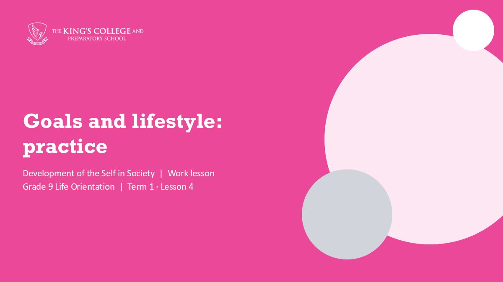

Term 1 · Lesson 4 · Work lesson: written practice
Goals and lifestyle: practice
Start here
Today I will
- Revise goals and lifestyle choices from my Handbook
- Answer IEB-style questions, including a 4-mark answer
- Mark my work and plan how to improve
Think first
Quick quiz: name the four areas of life for goals, and three influences on lifestyle choices.
Words to Know
| Word | Meaning |
|---|---|
| Values | Beliefs that guide your choices. |
| Lifestyle choices | Everyday decisions about health, time and habits. |
| SMART goal | Specific, Measurable, Achievable, Relevant, Time-bound. |
| Assertive | Calm, clear and respectful when you stand up for yourself. |
Slides

Notes
This lesson revises: Term 1 · Lesson 3: Goals and lifestyle choices. Read those notes first, then do the written practice.
Remember
Depth earns marks: reason, detail, result.
Written practice
Read the source
Aarav wants to make the first basketball team and get 70% for Maths this year. Most nights he plays online games until after midnight, drinks energy drinks to stay awake and skips breakfast. His older cousin tells him: 'You can't win on the court or in the classroom if you live like that.' Aarav says he will 'start next month'.
- 2.1Define the term 'lifestyle choices'.(1 x 1) (1)
- 2.2Identify TWO unhealthy lifestyle choices Aarav makes.(2 x 1) (2)
- 2.3Distinguish between a short-term and a long-term goal. Use an example from the source for each.(2 x 1) (2)
- 2.4Explain how Aarav's late nights could affect his goal of making the first team.(1 x 2) (2)
- 2.5Rewrite Aarav's Maths goal as a SMART goal.(1 x 2) (2)
- 2.6Name the influence that his cousin represents and explain whether it is positive or negative.(1 x 2) (2)
- 2.7Evaluate Aarav's plan to 'start next month'. Recommend what he should do instead.(1 x 4) (4)
Finished early?
Exam practice: Set A
Try exam questions on goals and lifestyle choices from the Term 1 exam practice bank.
- Turn to the Term 1 exam practice bank at the back of your Activity Book and find Set A: My time and my choices.
- Answer two or three of the 'Goals and lifestyle choices' questions, reading the brackets first.
- Mark yourself with the Term 1 exam practice memo on Google Classroom, in green pen.
- Write one thing you missed (a reason, a qualifier or an outcome) in your reflection box.